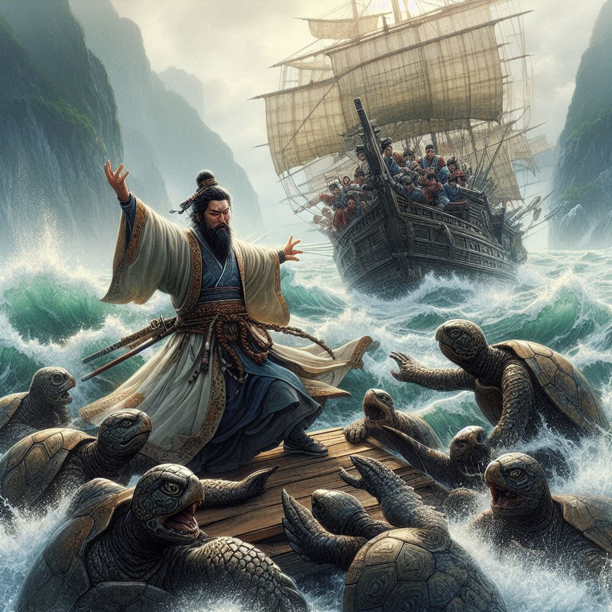

작가
김 훈
출판일
2001년
감상평에 대한 AI그림
소설 《칼의 노래》는 김훈 작가가 2001년에 발표한 작품으로, 충무공 이순신을 주인공으로 한 소설 중 가장 인지도가 높은 작품입니다. 동인문학상을 수상하였으며, 난중일기의 내용을 바탕으로 충무공 이순신이 1597년 백의종군하던 시점부터 노량해전에서 전사할 때까지를 이순신의 시점에서 다루고 있습니다. 이순신의 전쟁과 현실, 정치권력의 추악한 모습, 그리고 인간적인 고뇌와 절망 속에서도 군인으로서의 책임을 다하는 모습을 묘사합니다.
이 작품은 기존의 영웅적인 이순신 대신 실존적 고뇌자로서의 이순신을 그려내어 독자들에게 새로운 시각을 제공합니다. 정치적 갈등과 전쟁의 참혹함을 사실적으로 묘사하면서도, 이순신의 인간적인 면모와 고뇌를 깊이 있게 담아내고 있습니다. 작품 내의 소설적 요소와 역사적 고증이 적절히 조화를 이루며, 독자들에게 큰 울림을 주는 작품입니다.

감상평에 대한 AI평가
이 줄거리는 김훈 작가의 소설 《칼의 노래》의 핵심 요소들을 간결하게 잘 전달하고 있습니다. 주요 평가 포인트는 다음과 같습니다
✨ 간결함: 줄거리가 짧고 명확하여 독자가 쉽게 이해할 수 있습니다. 이순신의 백의종군 시점부터 노량해전까지의 주요 사건을 간단하게 설명합니다.
✨ 주요 주제 강조: 이순신의 전쟁, 정치적 갈등, 인간적인 고뇌와 책임을 주요 주제로 다루고 있음을 잘 전달합니다.
✨ 독자 관심 유도: 이순신의 인간적인 모습에 초점을 맞춘 부분이 독자의 관심을 끌 수 있습니다.
개선할 점을 꼽자면
✨ 소설의 문체나 작가의 표현 방식에 대한 간략한 언급이 추가되면 독자들이 더욱 풍부한 이해를 할 수 있을 것입니다.
전체적으로 이 줄거리는 소설의 분위기와 핵심 내용을 잘 전달하며, 독자들에게 작품에 대한 관심을 불러일으킬 수 있는 좋은 요약입니다.